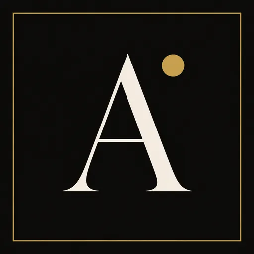

Development twin
Azure SWA eastus2. Review every board here. python -m ainav connect --publish-twin updates this host only.
Twin review · Azure SWA · Release 3.20.0 · Public apex empty 404 · Not launch Sale site

AINAV.InstituteDigital twin · 3.20.0 · review host · not the public apex
This Azure Static Web App is the development twin. The public hostname ainav.institute is on Cloudflare and is empty 404. Gold 99.5 is the release floor. Authorization is owner-only. A green check is not LIVE_PIN_OK. Not launch.
host=azure.swa · public_edge=cloudflare · authorized_release=false · launch_ready=false · pages_is_host=false
Azure SWA eastus2. Review every board here. python -m ainav connect --publish-twin updates this host only.
Cloudflare ainav.institute → empty Pages. Do not treat the apex 404 as the Institute. Do not add asuid from this plane.
James says launch and gold is at or above 99.5. Then publish that gold tree to the Cloudflare public origin. Do not auto-publish. Do not mark LIVE_PIN_OK.
Every sale, owner, quality, and release surface lives on this host for review. Primary nav stays The write, Proof day, Bake-off, Dashboard, Owner.
Sale rail — unauthorized journal, not a fear brand.
Ninety minutes — two named humans. Lab oids are not seats.
Walk away — cheaper native is a refuse.
Write-fear — not doom-fear. Not a /fear route.
The write — not the certificate. Not a /risk route.
Now — demand 0. Not a forecast. Not a /market route.
The admit plane — licensed copies versus two humans, one hash. Not a fourth SKU. Not #missing.
Proof day — ninety minutes. Browser rehearsal. Not a /demo route. Not Calendly.
Admit plane — three SKUs. One dashboard included. Not a CMS.
Close bench — three planes, remote demo, signed L1, assigned sandbox. Not a fourth SKU. Not production.
Firm bench — qualify, proof, close, assign, service, launch gate. Gold is not launch. 500/500 capacity. Not a CRM.
Roster — licensed-not-wired visible. Assign path to the close bench. Day map on #firm-ms-day. Every stage on the declared Microsoft substrate. Assign sits on Azure host. Microsoft is not the product. The roster is not wired.
Marks — AINav, Inc., AINav Control Plane, AINAV.Institute. Write-fear. Lockfile stays job_c. Microsoft marks are theirs. Teams is notify. Sandbox unnamed until signed L1. Not a fear brand. Not launched.
Sit-down day — MFA identifies. Identify is not admit. Now mailbox recorded. Next seat B. After L1 unnamed. Blocked stays refused. Honest zeros. Refuse is visible. Maps claimed=false. Packs are not SKUs. Unnamed until signed L1. Not a live named day. Not launched.
Sit / maps / attach — Sit Dynamics BC treasury. Room 1 is books. Room 2 is refuse. Walk Agent Intent. Banks, reserve journals, and booked receivables sit the write. Tokenization, RWAs, stablecoin mint, and crypto asset management stay Room 2. Complete industry drawer. Honest control. Need. Consequence. Now. Around the corner. Fiduciary is why two humans bind. GENIUS and CLARITY claimed=false. Fully operable. Every refuse clicks. Catalog is the message. Honest zeros. Refuse is visible. Not a crypto product. Not 17a-4. Not AI Governess. Domestic and international maps claimed=false. White papers are not filings. Packs, libraries, and repositories are not SKUs. MFA identifies. Not a /industry route. Not launched.
Agents > All — James reviews the Microsoft registry. An agent is not a seat. Agent 365 is not AINav. Census claimed=false. Around the write stays maps. Total agents is a Microsoft card. Leave five Available. Block Dataverse MCP. Cursor Cloud Agent operates host and twin. Not a seat. Not LIVE_PIN_OK.
Does not need more — This plane does not need additional access. Grok Build is not a seat. A Grok bot is not dual admit. Cursor Cloud Agent stays the recorded operator. grok login and XAI_API_KEY stay unrequested. Not LIVE_PIN_OK.
Cursor recorded — Cursor is recorded. Grok Build is mapped. Grok bot is not admit. They are not interchangeable. SuperGrok stays owner-only. Not LIVE_PIN_OK.
Does not need full access — Do not give full access. Build L1, P-ADM, U-DUAL, modules, packs, and repositories on the twin. The twin is not launch. Packs, modules, and repositories are not SKUs. Launch stays owner-only. Not LIVE_PIN_OK.
Twin certified is not launch day — Quality, operability, simulation, deliverability, updateability, and debugging run on the twin. Named-human proof day stays owner-only. Gold is not launch. Owner gaps stay owner-only. Not LIVE_PIN_OK.
Walk the industry — Five areas: books, sales deepen, keep, libraries, repositories. Walk Agent Intent. Banks, reserve journals, and booked RWAs walk Room 1. Tokenization, stablecoin mint, and crypto asset management stay Room 2. Need and why sit with standard inclusions and upsells. Packs are not SKUs. Industry certify is not launch. A 10/10+ quality check is not launch. Not LIVE_PIN_OK.
The whole firm is not launch — Business, build, and website on one board. The stitch is not a SKU. A 10/10 review is not launch. Not LIVE_PIN_OK.
Power Pages is not the Institute host — Considered. Power Pages is not a SKU. Power Pages is not the CMS. Complements stay eight. Not LIVE_PIN_OK.
Copilot Studio is not Job C — Considered. Copilot Studio is not a SKU. A human looked is not dual admit. Complements stay eight. Not LIVE_PIN_OK.
Connected is not live — Recorded. Licensed is not wired. Available is not a seat. A Graph read is not LIVE_PIN_OK. A Cursor app is not a seat. Complements stay eight. Not LIVE_PIN_OK.
Closing all gaps is not this plane — Recorded. Outlook mail is not a click. grok login is not this plane. An operate sim is not production. A 10/10 polish is not launch. Complements stay eight. Not LIVE_PIN_OK.
Three planes — Institute twin is the remote demo. Client sandbox is assigned after signed L1. Production is owner LIVE_PIN_OK only. Assigned stays 0. The Institute twin is not the assigned client sandbox. A shared sandbox is not production. Power Pages is not the Institute host. Not LIVE_PIN_OK.
One client, one sandbox — Need: a shared demo becomes the client's tenancy. Why: each signed L1 gets a segregated digital twin. Qualify, Institute proof, close L1, segregate, service, produce. Kit, enhance, and debug stay on that twin. Assigned stays 0. A shared sandbox is not production. Auto-promote is refused. Not LIVE_PIN_OK.
An industry is not a named client — Recorded. A shared sandbox is not production. Hours are not a SKU. Rollback is not LIVE_PIN_OK. A redeploy is not launch. Complements stay eight. Not LIVE_PIN_OK.
A production sim is not production — Recorded. Fixing all is not this plane. Rehearsed elements are not live. Making all much better is not launch. A rehearsal is not LIVE_PIN_OK. Complements stay eight. Not LIVE_PIN_OK.
A remainder close is not launch — Recorded. Leftover copy is not LIVE_PIN_OK. Owner hrefs are not owner clicks. Gold 99.5 is not production. A deep remainder is not a seated second human. Complements stay eight. Not LIVE_PIN_OK.
A 10/10 quality check is not launch — Recorded. Gold 99.9 is not LIVE_PIN_OK. A competitor analysis is not a named client. A green service is not production. A quality check is not a seated second human. Complements stay eight. Not LIVE_PIN_OK.
An IP board is not a patent — Recorded. Insulation is not uncopyable. An L1 license is not an assignment of Job C. Kit PASS is not a source license. This board does not close G12. Complements stay eight. Not LIVE_PIN_OK.
A vault hold is not LIVE_PIN_OK — Recorded. Secret names are not wired notify. A catalog must not hold secret values. Sentinel is not the admit plane. Owner directions and links sit on the hold board. A vault hold is not a seated second human. Complements stay eight. Not LIVE_PIN_OK.
A 10/10 close is not launch — Recorded. A booking is not recognized revenue. The Institute twin is not the assigned client sandbox. A custom database is not a fourth SKU. A catalog list is not collection. Complements stay eight. Not LIVE_PIN_OK.
The join is not launch — Walk the eleven hops. Five facts are not hops. A 10/10+ quality check is not launch. The stitched firm is not LIVE_PIN_OK. Licensed-not-wired is not a wired firm. Management and operations are not closed from this plane. A certified simulation is not a running firm. Complements stay eight. Not LIVE_PIN_OK.
Floor — one dashboard included with L1. Not a second SKU.
Honest missing — seat B, US Dataverse still open.
Quality board — apex 404, SWA twin, gold 99.5, not launch.
Ticket 2609030040009525. Canada is not United States. Not closed.
Complements — not a CMS. Identify is not admit.
Entra login — identifies. It does not admit.
src/ainav/data/catalog.json. Validators fail closed.make regen rewrites Institute JSON. Do not run live HTTP inside regen.make gold — plan-check plus coverage at or above 99.5.python -m ainav connect --publish-twin uploads institute/ to this Azure hostname.ainav.institute. Do not mark LIVE_PIN_OK.Refuse: --publish-institute stays launch_not_ready until James says launch. Page Rules that point the apex at this twin. asuid from this plane. Auto-publish on a green CI check. Treat Cloudflare edge as the Institute.
Not launch. Not authorized_release. Not LIVE_PIN_OK. Complements stay eight. Cloudflare is not a SKU.